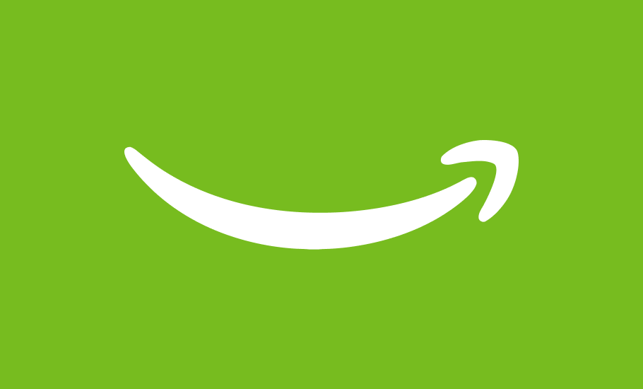

Hi, there! I'm Sooim Kang.
Systems designer — framing problems, defining constraints, and directing AI-native product ecosystems from signal to decision.


Systems designer — framing problems, defining constraints, and directing AI-native product ecosystems from signal to decision.
